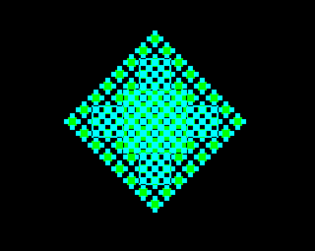

Single pixel and filled rectangle - 137 bytes (0.8%)
- §1. Plot a point
- §2. Plot a filled rectangle
- §3. Plot a filled rectangle with already sorted coordinates
- §4. Sort the coordinates of a given point and the current graphics cursor position
- §5. Set a pattern (or a solid colour from the current foreground or background colour)
.plotPoint = $8dd2 LDX #.vdu25ParameterXLow - .vduVariablesStart JSR .plotPointXInternal JMP .setGraphicsCursorPositionAndFinishPLOT
Rectangle axis aligned, defined by the bottom left and top right corner points.

.plotRectangleFilled = $8dda LDX #.vdu25ParameterXLow - .vduVariablesStart PLOT point JSR .sortCoordinatesAsBottomLeftAndTopRight JSR .plotRectangleInternal JMP .setGraphicsCursorPositionAndFinishPLOT
§3. Plot a filled rectangle with already sorted coordinates.
[NOTE: This doesn't clip to graphics window before filling, so the biggest rectangle takes 3.8 seconds: MODE 1:GCOL0,1:MOVE-32768,-32768:PLOT &65,32767,32767 ] On Entry: .vduWorkspaceAB is left coordinate of rectangle .vduWorkspaceCD is top coordinate of rectangle .vduWorkspaceEF is right coordinate of rectangle .vduWorkspaceGH is bottom coordinate of rectangle
.plotRectangleInternal = $8de5 LDX #.vduWorkspaceC - .vduVariablesStart LDY #.vduWorkspaceG - .vduVariablesStart swap CD and GH (swaps top and bottom coordinates) JSR .exchangeTwoVDUBytes .rectangleFilledLoop = $8dec Fill row CD from left X coordinate AB to right X coordinate EF LDX #.vduWorkspaceA - .vduVariablesStart one X coordinate LDY #.vduWorkspaceE - .vduVariablesStart other X Coordinate JSR .copyCoordinatesSetMasksAndFillRow fill one row Move down a row LDA .vduWorkspaceC } BNE + } DEC .vduWorkspaceD } CD -= 1 + } DEC .vduWorkspaceC } Check if we are done LDA .vduWorkspaceC } CMP .vduWorkspaceG } LDA .vduWorkspaceD } compare CD with GH SBC .vduWorkspaceH } BPL .rectangleFilledLoop } if (CD >= GH) then branch back RTS
§4. Sort the coordinates of a given point and the current graphics cursor position.
This results in a bottom left point and top right point. On Entry: X = offset to given point
.sortCoordinatesAsBottomLeftAndTopRight = $8e0d LDY #.vduGraphicsCursorPixelsXLow - .vduVariablesStart JSR .gxrSortPointsXY sort graphics cursor and current coordinate Now X,Y are offsets to the topmost and bottommost points respectively TYA } PHA } store topmost point TXA } PHA } store bottommost point JSR .sortCoordinatesXYByColumn set X = leftmost point, Y = rightmost point Now X,Y are the leftmost and rightmost points respectively PLA recall the bottommost point STA .gxrScratchspace3 store in scratchspace the bottommost point TYA PHA push the rightmost point LDA .gxrScratchspace3 get the bottommost point LDY #.vduWorkspaceA - .vduVariablesStart JSR .copyTwoCoordinatesToY copy the leftmost point and the bottommost point PLA TAX X = rightmost point PLA A = topmost point Copy two bytes from X to Y Copy two bytes from A + 2 to Y .copyTwoCoordinatesToY = $8e2a PHA remember A JSR .copyTwoBytesWithinVDUVariables PLA recall A TAX INX INX JMP .copyTwoBytesWithinVDUVariables
§5. Set a pattern (or a solid colour from the current foreground or background colour).
Stored in the eight bytes at $0C17-$0C1E On Entry: X = 0 for foreground X = 1 for background On Exit: gxrCurrentPattern[0...7] holds the pattern
.setupCurrentPattern = $8e35 LDA .vduForegroundGCOLMode,X get foreground / background GCOL mode AND #$F0 get top bits (pattern number) LSR as multiples of 8 (and clears carry) BNE .copyCurrentPattern Copy solid foreground/background colour into current pattern LDY #7 loop counter LDA .vduForegroundGraphicsColour,X - STA .gxrCurrentPattern,Y DEY BPL - RTS .copyCurrentPattern = $8e49 Copy pattern from private workspace into current pattern memory ADC #.workspaceOffsetCurrentPatterns - 1 TAY JSR .getPrivateWorkspaceAddress LDX #7 - LDA (.privateWorkspaceLow),Y read from pattern STA .gxrCurrentPattern,X store in current pattern DEY DEX BPL - RTS